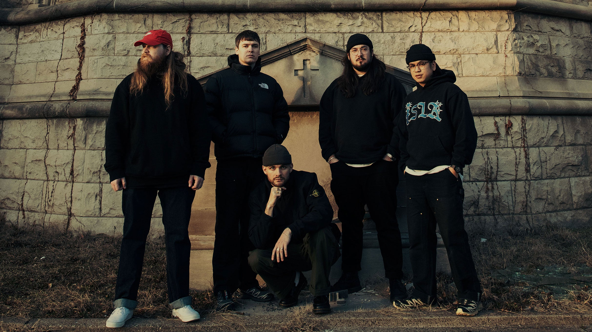

Knocked Loose é uma força implacável no cenário do hardcore punk/metalcore, nascida das terras de Oldham County, Kentucky, em 2013. Fundada por Bryan Garris nos vocais, Cole Crutchfield e Isaac Hale nas guitarras, Kevin Otten no baixo e Kevin Kaine na bateria, a banda rapidamente se destacou pela sua abordagem incendiária e autenticidade.
Com letras que exploram temas de angústia, raiva e desilusão, o Knocked Loose transcende as convenções do gênero, oferecendo uma dose cruamente honesta de emoção em cada faixa. Sua sonoridade agressiva e implacável é forjada a partir de uma mistura de influências que abrangem décadas de música pesada. Do hardcore dos anos 90 ao metalcore contemporâneo, passando por elementos do thrash e do death metal, a sonoridade única do Knocked Loose é uma síntese de tudo o que é visceral e intenso, com inspirações vindas de bandas como Converge, Hatebreed, Every Time I Die, The Dillinger Escape Plan e Terror.
Com o lançamento de seu álbum de estreia, "Laugh Tracks", em 2016, o Knocked Loose capturou a atenção do mundo da música pesada. O álbum foi aclamado pela crítica e rapidamente se tornou um ponto de referência para o ressurgimento do hardcore. Seguido por "A Different Shade of Blue" em 2019, a banda solidificou sua posição como uma das líderes do movimento.
Com uma base de fãs fervorosa e uma reputação impecável como uma das bandas mais intensas e emocionantes para se assistir ao vivo, o Knocked Loose continua a empurrar os limites do gênero, desafiando expectativas e deixando sua marca indelével na história do hardcore e do metal.
Musica favorita: Everything is Quiet Now